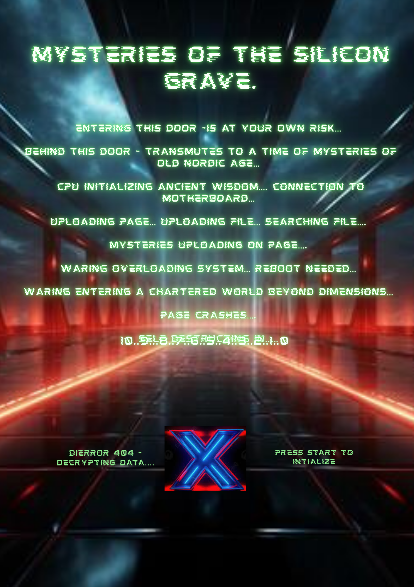

Skurets mystik
Alt denne hvileløse vandring indendørs – alle disse lopper i mit indre er ikke sundt for mig. Slet ikke for mit så tunge hoved. Mon ikke et par vandresko ville give mening nu? At have så mange ting i sit indre kræver frisk luft.
At skimme den dør, der formår at skabe en løsning, især med den unikke sti lige ude foran – en sti, der ligger så tæt på ens indre. At åbne denne dør til det, ens indre stemme fortæller, at vejen bør gå. Man bør tage det første skridt ud i det fri for at skabe luft i sit indre. Denne sti har båret vægten af tunge fodspor i generationer – mange, som førte til særlige stunder skabt i det hus, vi alle har fået sko på i. Mange, som tog nogle helt unikke valg.
Da minderne kommer til live, dukker især ét op: det spektakulære billede på væggen i stuen af hele vores slægt – vores historie gennem flere årtier. Det ærgrer én så højt, som det står der op ad den væg, hvor det ville pynte så flot. Mon ikke et nyt program er ved at skabe sig på dets plads?
Midt i denne unikke garage får jeg øje på en ret ukendt genstand – den oplyste, hvide skrivemaskine. Dog kan man ikke spotte personen bag denne unikke maskine, som bærer mange brugsspor fra de mange ord skabt af en vis ældre herre i vores hus. Sikke dog tiden ændrer sig fra min kære fars tid, hvor dagene dengang var så unikke, og hvor ord blev skabt med omtanke og kløgt – til nu, hvor Malik viser mig denne højteknologiske skrivemaskine, han selv bruger.
Med stor undren må dette undersøges nærmere. Denne genstand må have en måde at bladre videre på, for de ord, der står, findes ikke i mig. Der må findes en mening med dette fine urværk bag alle disse ord.
Mit øre opfanger en lyd – mon det kan være mit kære barnebarn Malik? Måske kan han kaste lys over denne selvlysende ting. For om noget var man så beriget med Malik. Hans søde, sjove og kloge hoved bringer nogle gange lidt udfordringer på vejen. Dog finder man under alt det lyse hår en fornuftig ung mand, som i sit nymoderne tøj har været længe væk. Mit kære barnebarn er kendt for at have sit mønstrede tøj på med linjer og altid farverige valg. Han har altid en form for ledning eller en underlig, fremmed ting hængende ud av lommerne, og han har en ukendt genstand i sin ene hånd hele tiden, som han så ofte må kigge på, især når den siger en lyd.
Før jeg når at læse dette skriv, som virker helt hen i vejret – nærmest som sort snak for en herre i sine sene år – må man dog undre sig over, hvordan man bladrer videre i den. Hvor finder man margen i den? Jeg må undre mig over, hvor han er lige nu, for at disse ord på den hvide skrivemaskine kunne skabe fornuft, da mange af ordene virker som hokus pokus for mig.
Dog fanger mit øje Malik, der kommer gående med sit så genkendelige smil. Men hvad har han nu i hånden? Endnu en ting, han sætter ind i denne skrivemaskine, mens han forklarer, at det er en “slags boks, der husker ting”.
“Se farfar, man sætter den ind her i det her hul, ligesom det sorte kabel, der giver strøm fra væggen af, hvor det lille runde hul her er til dette stik. Så farfar, med dette USB-stik kan man 'flytte ting' fra min 'skrivemaskine', som hedder en computer eller en pc. Det er den ultimative maskine; den kan meget mere, end man tror. Du har en hammer, værktøj og en arbejdsbænk til alt det træ, du laver tangent med her i garagen. Denne her er mit job – et jeg fik for mange år tilbage, da jeg blev ansat som IT-tekniker hos et firma, der producerer programmer til computere via firmaer, der vil købe det. Netop derfor bruger jeg denne USB, som 'gemmer data'.”
“På dette lille USB-stik kan man gemme billeder, videoer og det, vi i IT-verdenen kalder 'filer'. Derfor har jeg denne med mig alle vegne, netop som min pc altid er med mig. For farfar, du har flere fotoalbum med fysiske fotos – jeg har mine her digitalt, som det hedder, når man bruger dette USB-stik. Med denne USB kan du have billederne i mange årtier. Ligesom denne lille mursten ved siden av min pc – det er en ekstern harddisk, der sidder med samme ledning ind i min pc. Den har langt meget mere plads og 'husker' det, du beder den om.”
“Men Malik, alt det her er så ukendt for mig. Hvis nu du forklarer mig, hvordan du bruger de ting...”
Jeg er jo fra den tid, hvor generationen slet ikke kan forstå alle disse nymoderne ting. For mig er det at kigge rundt i fars ladeport – duften af savsmuld, nyskåret træ, der ligger så fint stablet i hjørnet, det vi bruger på de koldeste vintre i brændeovnen. De har stået der fra min kære farfar, der grundlagde hele vores hus – et hus, hvis gulvbrædder med sine fine, unikke revner er blevet betrådt et utal af gange. Fra fodspor, som gav hvert kært familiemedlem dets frihed, til alle de minder, som der blev skabt, hvilket giver stof til eftertanke for alle fremtidige generationer.
For i vores familie har byggestenen altid været at skabe unikke oplevelser for alle. Især da man i min tid ikke havde alle disse nye opfindelser ved hånden, i en generation hvor overvejelser var lagt i hænderne, som tog en tørn. Alt dette skaber fundamentet for vores fortælling.